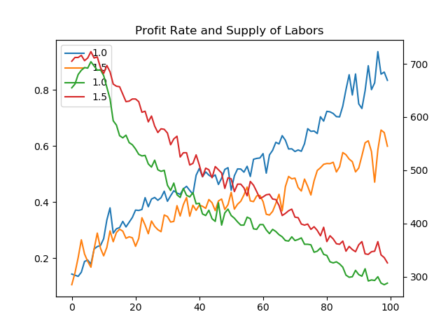
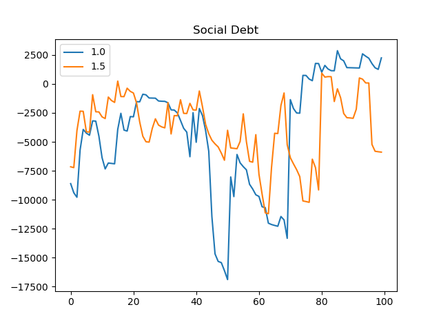

ミクロ経済学の我流シミュレーション その５ 大改良
大改良を行った micro_economy_7.py をリリースする。改良点は大きく以下の通りである。
●企業数をだいたい５社で安定化させるため、standardProfitRate を商品価格等と同列に最適化パラメータに導入した。
●企業の優位性の重みづけに基づいて生産の分担を行うとき、「一製品あたり労働量」だけでなく、「一製品あたり原料量」についても見ることにした。
●最適化するそれぞれの項目の連携をわかりやすくするため、最適化する項目をそれぞれ tanh でくくった。企業の利益率でなく社会的負債を少なくすることを最適化に組み込んだ。これまでのさまざまな技術を統合し、オプションで指定できるようにした。
以下、順を追って説明していく。
■企業数の固定と資本家の競争
資本家どうしが競争することで、企業数が 1 よりも大きくなると同時に、その数が資本家の数ぐらいに限られる…それが望ましい状態であると考えることにする。ちなみに、今のモデルでは、資本家の数は 5 人で、最大の企業数は 10 である。
これは最適化するとき、企業の数が 5 を越えるまで最適化関数が増え、それ以降は増えないとすることで実現できると当初考えた。しかし、それだけではうまくいかず、結局、新規企業の目安となる standardProfitRate について、商品価格などと同じ最適化のパラメータとし、それを上下させることで企業数がだいたい 5 になるようにできた。
問題は、これを正当化する論理である。企業数が 5 に保たれる裏で、資本家はどういう競争をすれば、そういう最適化と「矛盾なくできるか」が問題となる。
企業の数を5ぐらいにするというだけなら、資本家がどうたらという議論はいらない。しかし、最適化が何がしかの競争の結果なされると考えるなら、資本家というものを考える必要があるのではないか。そして、資本家がどう企業をもつかという部分では、矛盾がないようにする必要があるのではないか。
つまり、社会は最適化したいこと(この例では企業の数を 5 ぐらいにする)があるが、それをどういう競争を通じて実現するかという問題があり、それは本来は別のことなのではないかと私は考える。最適化のために、競争が目的を導かない場合は、いくらでもルールをいじっていいというのが通常の競争とは少し違う。
社会の最適化を考えるには、ある「最適化」が可能なような競争ルールはあるか、最適化の結果はルールと矛盾がないか…を確認・証明する必要があるのではないか？
導入した standardProfitRate というものの正体も謎である。中央銀行の貸出金利の調整が近いのかもしれないが、それが自動的に最適化する意味は示唆的と言えるかもしれないが、意味不明な部分がある。ただ、これが企業数を 5 で安定化させる確実で単純な方法であったというだけである。
なお、このような standardProfitRate を使用したくない場合は、--fix-standard-profit-rate オプションを使えば良い。出力ではわずかに standardProfitRate が変化しているように見えるが、内部ではちゃんと固定されて計算がなされる。
■生産の分担の改訂
実コストで売れゆきが変わるようにできないか…と思い、生産の理論を見直すことにした。「一製品あたり労働量」すなわち「賃金弾力性」だけでなく、「一製品あたり原料量」すなわち「原料弾力性」についても見ることにした。 (「弾力性」という言葉の使い方が少し普通と違うかもしれないが、「一製品あたりの量」が弾力的なパラメータとして利用されることをここでは、示している。)
《その１》と同じように、「優位性(superiority)」を A_i 、「一製品あたり労働量(laborsPerProduct)」γ_i、賃金の変化量を Δ の他に、「一製品あたり原料量(ingredientsPerProduct)」α_i と原料価格の変化量を Θ として利用することにした。
重みは、A_i * (γ_i ** (- d_1 * tanh(c_1 * Δ))) * (α_i ** (- d_2 * tanh(c_2 * Θ))) をとし、重みによって生産の分担を行う。ちなみに、tanh は発散を防止するため今回新たに導入したものである。(c_1, c_2, d_1, d_2 は設定できる定数。)
■複数同時最適化のための tanh
まず、企業の利益率の最大化ではなく、社会的負債(social debt)を最小化しながら、なおかつ、分野の最大利益率のバランスを取るようなことを考えた。micro_economy_1sd.py と micro_economy_3.py の統合である。
また、micro_economy_5.py のようなスコアの変形をバランスを取るのと同時に行ったらどうなるかというのにも興味があった。micro_economy_5.py との統合である。(さらに、exp_01_06.py で行った各種の最適化もいちおう使えるようにした。)
それらをするために、最適化項目の「粒をそろえる」ために項目をそれぞれ tanh でくくり -1.0 か 1.0 の部分スコアになるようにした。さらに社会的負債のような大きく変動する項目は、そのものではなく過去からの変動率を見るようにした(tanh でもくくった)。
最適化項目を順に述べる。
まず、社会的負債の一期前からの変化率である。一期前の絶対値が 1000 以下の場合は 1000 で割るようにしている。tanh でくくる前にデフォルトでは 1000.0 を掛けている。
次に、労働需給に関して、(需要-供給)の二乗をし、需給が釣り合うようにしている。社会的負債には残業代等が含まれるので、この項がなくても良さそうなものだが、これをなくす(--score-labor-mag=0 にする)と、変化が大きくなりすぎ経済が安定しなくなった。tanh でくくる前にデフォルトでは、0.00005 を掛けている。
次に、《その３ log 戦略》の score_transform をしながら、各分野の最大の利益率の「平均」を最大化するようにしている。が、これは社会的負債ですでに考慮されているとできるためデフォルトでは tanh でくくる前に 0 を掛けて使わないようにしている。
次に、その score_transform をした各分野の最大の利益率の「分散」を最小化するようにしている。デフォルトでは tanh でくくる前に 10.0 を掛けている。
次に、企業数が 5 の場合最大になる部分スコア(カイ二乗分布の形)を tanhをかまさずにスコアに組み込んでいる。組み込む際にデフォルトでは最大値が 1 になるように変形している。
次に、standardProfitRate が 0.06 に近づけるために、(standardProfitRate - 0.06) ** 2 に tanh をかませたものを組み込んでいる。さらに最適化関数に与えるstandardProfitRate の初期値を前の最大の利益率の平均にしている。これがないとうまく最適値に向かう傾斜がつかないようだ。デフォルトでは tanh でくくる前に 0.01 を掛けている。
最後に、賃金が必需品を買うにも満たない場合、労働供給を 0 ととりあえず内部ではしているのだが、そのようなとき、特別なペナルティとしでデフォルトでは 100 をスコアに足している。これは、micro_economy_1sd.py のころは必要だったものの、労働需給の釣り合いを組み込んでる今では必要ないと思われる。
■実験
「中高年が必要のない仕事を「生産」するよりは、ニートになってベーシックインカムでまかなうほうが、社会が効率的になるように私には思えたことがあった。少ない額で公共事業ができるようになり、余った分を分配にまわせるのではないか」…と考えた。
公共事業についてはまだこのモデルには組み込んでいないが、「中高年が必要のない仕事を生産する」というのは、「一製品あたり労働量」が多いということである。「一製品あたり労働量」は初期値が違えば、その傾向がだいたい続く。そこで元の初期値に掛けるオプションを用意し、それが 1.0 の場合と 1.5 の場合(--init-lpp-mag=1.0 と --init-lpp-mag=1.5 の場合)を試してみた。
$ python exp_02_05.py --init-lpp-mag=1.0 --trials=100 --score-transform=hybrid --save-history=me7_lpp_1.0.csv
Acronyms: W: Wages, N: Necessaries, L: Luxuries, I: Ingredients.
[1] OptForStep(Fail): iterated 592 times score=-2.3602310190466813
Companies N:2, L:2, I:2
[Type] [OwnerId] [ProfitRate]
N 1 0.1477959741135095
N 0 0.10127049815818046
L 4 0.04760970763271057
L 1 0.13365178847854356
I 0 0.14774391880917012
I 0 0.13452889546385483
Increase of Social Debt: -8606.572683368997
Increase of Total Savings: 2313.653177473392
Price W:24.636781466068975, N:7.455001813155708, L:15.313889893249057, I:13.149837049780977, S:0.05847574195560694
Worker's Savings Increase: 7.450021908069296
Supply of Labors = 655.0
(Demand - Supply) of Labors = -0.40346076692799215
Profit Rate N:0.1477959741135095, L:0.13365178847854356, I:0.14774391880917012
Product N:2316.9267813334213, L:169.99999999999997, I:1281.5044045164595
Savings mean:12.078456626045737, variance:46.58181581041189
[2] OptForStep: iterated 373 times score=-2.3605014912805253
Companies N:2, L:2, I:2
[Type] [OwnerId] [ProfitRate]
N 1 0.13896589335297677
N 0 0.09308280122388377
L 4 0.0606160319228116
L 1 0.13891560839982017
I 0 0.13887626174246065
I 0 0.12587481736832332
Increase of Social Debt: -9396.220611490608
Increase of Total Savings: 2132.9027714063395
Price W:25.14404663750557, N:7.493132509140533, L:15.602545894781333, I:13.25859859918647, S:0.12605923218397344
Worker's Savings Increase: 7.92239425366731
Supply of Labors = 662.0
(Demand - Supply) of Labors = 0.007557951223134296
Profit Rate N:0.13896589335297677, L:0.13891560839982017, I:0.13887626174246065
Product N:2309.8164385381547, L:202.0, I:1277.9560054025442
Savings mean:14.200747940877921, variance:44.204376371845065
(…)
[100] OptForStep: iterated 539 times score=-1.9948750748851554
Companies N:5, L:5, I:5
[Type] [OwnerId] [ProfitRate]
N 1 0.6450079759757852
N 1 0.6950074212660636
N 1 0.7466563162701466
N 1 0.798617401909987
N 1 0.8524844020835912
L 1 -0.38592288635138905
L 4 0.5262602593889526
L 3 0.39659138522864473
L 4 0.6326943952376045
L 3 0.7762017156724297
I 1 0.6200835805388397
I 0 0.6870328493327034
I 3 0.7392927727357566
I 1 0.7999650260479115
I 1 0.8754906375126839
Increase of Social Debt: 2243.3139758936295
Increase of Total Savings: 185.94838493137308
Price W:8.543025423431933, N:1.1795425908625226, L:3.4894933886455344, I:1.6410432268270552, S:0.6402321728410452
Worker's Savings Increase: 1.2301128135278132
Supply of Labors = 288.0
(Demand - Supply) of Labors = -4.268709640050417
Profit Rate N:0.8524844020835912, L:0.7762017156724297, I:0.8754906375126839
Product N:6230.785755332029, L:49.99999999999999, I:2734.418656354137
Savings mean:1.264384730779118, variance:1.0095879746739385
ちなみに --score-transform=none がデフォルトであるが、これを hybrid にしたほうが、経済が安定する。特に --init-lpp-mag=1.5 の際はこれがないと最初経済がクラッシュぎみになってしまう。なお、上の出力結果で 1.5 のときは完全に省略した。
企業数は各分野とも 5 ぐらいであるが、そこにずっと固定されるわけではないのが興味深い。最適化の妙だろう。
今回、--save-history というオプションを作り、データを CSV ファイルにも出力できるようになっている。出力した CSV ファイルをグラフにするための show_histories.py も用意した。使い方は、申し訳ないがソースを見て欲しい。それで出力したグラフが次の二つである。
予想としては、「一製品あたり労働量」を多く(1.5に)すれば、必要な労働量が増える＝労働供給が増える一方、企業の利益率は犠牲になるだろう。が、社会的には「生活保護」の必要性が減るため、社会的負債は少なくて済むだろうというものだった。

一枚目のグラフは、「労働供給が増える一方、企業の利益率は犠牲になる」ことを証左している。青の線が 1.0 のときの、黄色の線が 1.5 のときの「各分野の最大の利益率…の平均」である。ともに新規起業によって上昇していくが、最初のうちは差がないが、序々に差がついている。
緑の線が 1.0 のときの、赤の線が 1.5 のときの「全労働供給」である。こちらはだいたい一定の幅を保ち、ともに下がっていっている。
企業の利益率の最大化ではなく、社会的負債の最小化をしているため、「生活保護」を減らすために「全労働供給」が増えていくのではないかとも思ったが、そうなってはいない。

二枚目のグラフは、社会的負債のグラフである。こちらは違いがほとんどわからない。「生活保護の必要性が減るため、社会的負債は少なくて済む」とはなっていないようだ。逆に、「ニートになってベーシックインカムでまかなうほうが、社会が効率的になる」とも言えてない。
もしかすると、どこかがおかしいのかもしれないが…。
■追加実験: micro_economy_4*.py との統合。 (2020年2月15日)
贅沢品の ingredientsPerProduct を増やす「経済成長」モデルであるところの micro_economy_4.py を micro_economy_7.py にだいたい統合した micro_economy_7li.py も作った。ただ、これはあまりうまくいっていない。
ingredientsPerProduct を増やす IL (ingredientsLevelForLuxuries) が基本、一本調子で増えていくのが意外である。下がりそうなときも下がらないのは、下げると利益等が下がるということか。
また、--trials=100 にするとパラメータによっては簡単に、必需品価格が 1 に貼りついたり、どれかの分野の企業数が 1 になってしまったり、労働需給の差がとても大きなものになって、クラッシュぎみになってしまった。
スコアの組み方については、かなり特殊なことをしているので、ソースを見ていただきたい。
■追加実験: Dual-Annealing 法を使ってみる。 (2020年2月22日)
他の最適化手法として Dual-Annealing 法を使ってみる。それは --opt-try=da または --opt-try=da0 で以前から試せたが、バージョン 0.0.9 でより適正に試せるようにした。
micro_economy_7li.py で試行回数 20 回(--trials=20) で --opt-try=da を試した結果、社会的負債(social debt)がマイナスに大きいところなのだろうか、賃金や必需品価格が値が大きな「飛び地」に移行してしまったりした。--opt-try=da0 を試すと、たまたま、「飛び地」には行かなかったが、贅沢品の利益率のみマイナスになるなど、利益率の「バランス」を取っているはずなのにおかしな値になった。
この解決だが、価格の変化率が 0 に近いとよくなるような最適化項目を組み込むべきかとまず考えた。しかし、それも「バランス」を取るのに似て効きにくいのではないかと考えなおした。
そこで、揺れ動いていた利益率の「バランス」を取るのをかなり強制的にやってみようと考えた。それを無理矢理するのが、新設したオプションで --score-variance-mag-2=10 とする方法である。x というスコアを tanh をかませて組み込むときに、a * tanh(b * x) として、b を「感度」、a を「重要度」と呼ぶことにすると、「重要度」を 1.0 から 10 に上げるのが、このオプションである。
こうすることで、「飛び地」への移行や、利益率のバランスの崩れなどおかしなことはほとんど起きないようになった。企業数が 5 になりにくく 1 になったりするなど、「おかしなこと」がまったく起きないわけではないが。
つまり、バランスに極度に気を付けていれば、それだけで「インフレ」みたいなものが起きにくくなるとここでは結論できるようだった。
■追加実験: 「公共事業」の成長。 (2020年3月10日)
水道などの公共事業は、贅沢品というより必需品が増えることに相当しよう。贅沢品だけでなく必需品も成長するようにしてはどうだろう。必需品に含まれる原料の成長は定数 c = 0.5 ぐらいについて、ingredientsLevelForLuxuries ** c にすれば良いと考えた。
これを試すオプションとしては micro_economy_7li.py に --power-necessaries-ingredients=0.5 を足せばよいようにした。
試すと、100期で iL は 70 まで成長。どれかの価格が 1 に貼り付く「クラッシュ」もなかった。
極限すると、必需品は賃金に含まれ、賃金は原料に含まれる。原料に含まれる原料には上限があるため、必需品に含まれる原料には上限があるのではないか。…と心配したが、意外なことに、今回与えた数値ではその上限に達する様子はなかった。
また、成長は必需品の量が増えるべきであって、必需品に含まれる原料が増えるべきというのは違うのではないか？…とは思った。
今回、税として取っているわけではないが、実際はそうしていると考えるなら、その一定率の原料が公共事業に使われているイメージか。が、そのイメージなら贅沢品に関してもそれは言えそう。労働を必要とせず公共事業ができるわけはないので、原料だけ増えるというのはあまりよくないように思う。
原料だけでなく、一製品あたり労働量も増やすほうが公共事業のイメージには近いかもしれないが、このモデルは、機械化なども同時に起こり、それが人材の高度利用と打ち消しあい、一製品あたり労働量が増えてない場合をとらえているということになるのだろう。
今回のようなことをせず、はっきり税として取って公共事業は別にするほうが良いかとも考えたが、それは今後の課題とした。今回と似た枠組にしたいなら贅沢品からの消費税と所得税に近い必需品からの消費税を考えることになるだろうか。
■結論
大改良と統合を行った。過去のソースとつながりがまったくわからなくなるほどの変化ではないが、かなりいじっている。企業数を一定にするため standardProfitRate の最適化も導入した。
その中で、「必要のない仕事を生産する」ことの効果が、社会的負債にはほとんどないことがわかった。
一方、「一製品あたり原料量」も見る生産の分担の改訂も行ったが、その効果については実験ができていない。それは今後の課題としたい。
「経済成長」モデルとの統合はあまりうまくいかなかった。これをなんとかするのも今後の課題だろう。
Dual-Annealing 法は、そのままだと「飛び地」にいくなどしてうまくいかなかったが、利益率のバランスを極度に重視することでそれが防げた。
（なお、上の実験結果およびグラフはバージョン 0.0.7 によるもの。）
■参考
アップデートの情報、このシリーズの他の記事へのリンク等は、micro_economy_7*.py についても、その１のほうで見てください。
●《ミクロ経済学の我流シミュレーション その１ 基礎経済モデル》。
■ライセンス
パブリックドメイン。 (数式のような小さなプログラムなので。)
自由に改変・公開してください。
■アーカイブ
今回の配布物は以下の zip ファイル。更新があれば下のリンクの中身は最新のものに置き変わっているはず。micro_economy_7*.py が入っている。
●micro_economy.zip
■最後にひとこと
ぜひ、いじって、いっぱい実験してみてください。いじるときは micro_economy_7.py (無印) を基にするのが吉でしょう。
更新：2020-02-13,2020-02-15,2020-02-22,2020-02-23,2020-03-10,2020-03-11,2020-03-26
初公開：2020年02月13日 06:27:50
最新版：2020年03月26日 17:53:33
Links: その３ log 戦略: http://jrf.cocolog-nifty.com/society/2019/05/post-79cdc2.html その１: http://jrf.cocolog-nifty.com/society/2018/03/post.html (hbm) ミクロ経済学の我流シミュレーション その１ 基礎経済モデル: http://jrf.cocolog-nifty.com/society/2018/03/post.html (hbm) micro_economy.zip: https://www.sugarsync.com/pf/D252372_79_6993338201
後方参照 (3 件)
- URL参照 西田＆花木『マルチエージェントのための行動科学：実験経済学からのアプローチ』を読… 2022年02月13日
- URL参照 フリードマン『資本主義と自由』と藪下史郎『非対称情報の経済学』を読んだ。新自由主… 2020年03月17日
- URL参照 「ミクロ経済学の我流シミュレーション」の記事の「その５… 2020年02月13日